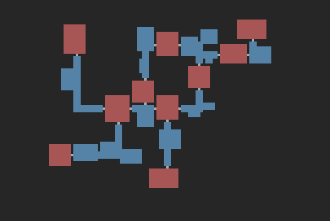
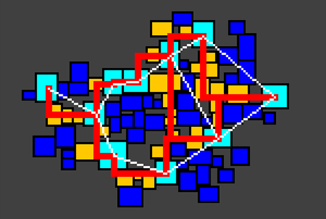
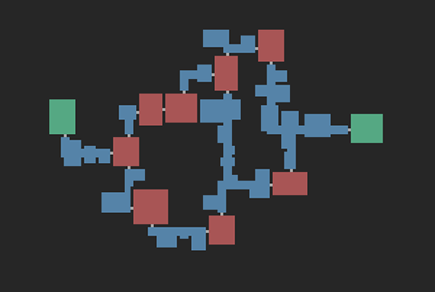

In all of my (unfinished) games, a lot of time is taken up with content generation. This includes art, story, skills/combat ideas, map creation and countless other tasks. One of the things that I've always been intrigued by is procedurally generated maps and textures. They offer decent, controlled layouts that can be generated on the fly. So recently, I set out to take a stab at it. I think it's a good start to a real rogue like dungeon generator; here's how it went.
First off, here's a sample end result. I am really happy with it and plan to eventually generate a tiled map given a tile set.
I stumbled upon this post on Reddit pretty quickly after searching for "procedural dungeon generation" on Google, Procedural Dungeon Generation Algorithm Explained by phidinh6. The post outlines a pretty straight-forward approach to generate random rooms that do not intersect, and then connects them with hallways based on a connected graph. He easily lays it out and gives a nice demo that really helped me visualize the whole process, here.
There were a couple steps that were easier said than done. The first being step 3; specifically "simple separation steering behavior to separate out all of the rectangles." I couldn't find anything on the internet that was directly related, but I was able to create something based on what I could see in his demo. The basic idea is to loop through each pair of rooms and shift both the least amount possible to get rid of any overlap. Keep doing so until no rooms overlap. Here's some commented code to do this step:
// a Room is a simple rectangle (x, y, width, height)
private static void separateRooms() {
Room a, b; // to hold any two rooms that are over lapping
int dx, dxa, dxb, dy, dya, dyb; // holds delta values of the overlap
boolean touching; // a boolean flag to keep track of touching rooms
do {
touching = false;
for (int i = 0; i < rooms.size(); i++) {
a = rooms.get(i);
for (int j = i+1; j < rooms.size(); j++) { // for each pair of rooms (notice i+1)
b = rooms.get(j);
if (a.touches(b, padding)) { // if the two rooms touch (allowed to overlap by 1)
touching = true; // update the touching flag so the loop iterates again
// find the two smallest deltas required to stop the overlap
dx = Math.min(a.getRight()-b.getLeft()+padding, a.getLeft()-b.getRight()-padding);
dy = Math.min(a.getBottom()-b.getTop()+padding, a.getTop()-b.getBottom()-padding);
// only keep the smalled delta
if (Math.abs(dx) < Math.abs(dy)) dy = 0;
else dx = 0;
// create a delta for each rectangle as half the whole delta.
dxa = -dx/2;
dxb = dx+dxa;
// same for y
dya = -dy/2;
dyb = dy+dya;
// shift both rectangles
a.shift(dxa, dya);
b.shift(dxb, dyb);
}
}
}
} while (touching); // loop until no rectangles are touching
}He opts to use a Delaunay Triangulation trimmed with a Minimal Spanning Tree to connect the bigger rooms. However, I found naughty's suggestion to use a Relative Neighborhood Graph to be simpler and to produce better results. It created the loops to make the dungeons more complex while still minimally connecting all rooms. From Wikipedia:
"(A RNG is an) undirected graph defined ... by connecting two points A and B by an edge whenever there does not exist a third point C that is closer to both A and B than they are to each other."
Here's my implementation:
private static void connectRooms() {
Room a, b, c; // Rooms to check between
double abDist, acDist, bcDist; // squared distance between each of the 3 rooms
boolean skip;
for(int i = 0;i < corridors.size();i++) {
a = corridors.get(i);
for(int j = i+1;j < corridors.size();j++) { // for each pair of rooms
skip = false;
b = corridors.get(j);
// get the sqrd distance between a and b
abDist = Math.pow(a.getCenterX()-b.getCenterX(), 2) + Math.pow(a.getCenterY()-b.getCenterY(), 2);
for(int k = 0;k < corridors.size();k++) { // loop through all other rooms
if(k == i || k == j) // that are not a or b
continue;
c = corridors.get(k);
// get the other two applicable distances
acDist = Math.pow(a.getCenterX()-c.getCenterX(), 2) + Math.pow(a.getCenterY()-c.getCenterY(), 2);
bcDist = Math.pow(b.getCenterX()-c.getCenterX(), 2) + Math.pow(b.getCenterY()-c.getCenterY(), 2);
// if the distance between a and c or b and c are smaller than a, the pairing of
// a and b is not a graph edge
if(acDist < abDist && bcDist < abDist)
skip = true;
if(skip) // so we break the loop and go to the next a and b paring
break;
}
if(!skip) { // if this a and b pairing was never skipped, it should be an edge
if(graph.get(a) == null)
graph.put(a, new LinkedList());
graph.get(a).add(b);
}
}
}
}After these rooms are connected, I needed to generate the hallways required to traverse between them. I wanted the hallways to randomly bend from A to B either clockwise or counter clockwise which caused me some trouble. So much so I needed to look for help at Stack Exchange, here. Thanks to Heckle's suggestion I was able to find a way to connect the two rooms with connected hallways. There's a code example on the Stack Exchange page.
Once I was able to connect the big rooms with hallways, it's simply a matter of drawing the rooms, smaller corridors and hallways to an image. Pixels can translate directly to tiles, so I plan to generate tile maps based on these generated images. This Image shows a (messy) more detailed result of my methods.
And here's a final result. I still need to work on the doorways from the hallways and the big rooms, but it's a great starting point for a rogue-like map.
You can find the full source code on my Procedural Generation GitHub.